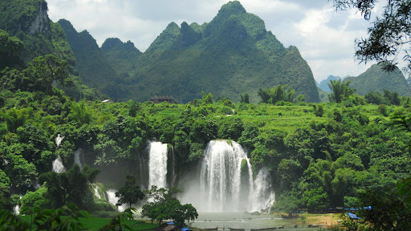
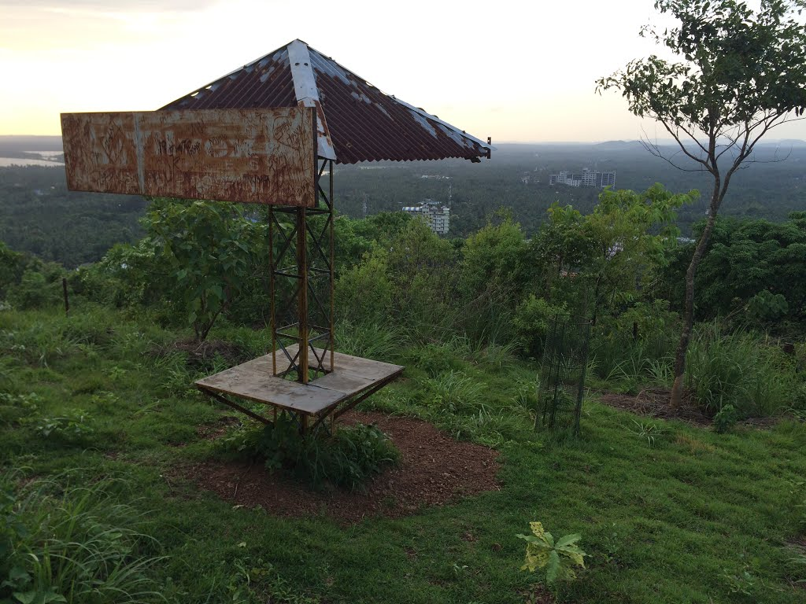

Officially known as the cultural capital of Kerala, Thrissur is famous for fostering classical Keralan performing arts, religious sites and the renowned Thrissur Pooram festival, Onam festival and Vadakkumnathan Temple.
Thrissur is the short form of Thiru-Shiva-Per-Ur which literally means “a city with three temples of Lord Shiva”. Thrissur later became anglicised to Trichur.
Thrissur is from where Kerala gets a fair share of its festive glitter. Thrissur was the capital of the Kingdom of Kochi. The festivals celebrated here are the major attraction for tourists and a visit to Thrissur is incomplete without witnessing these. Other tourist spots in Thrissur include the Vadakkumnathan Kshetram Temple, Tomb of Shakthan Thampuran, Archaeology Museum, Athirapally Falls, Heritage Garden and many more.
The oldest mosque in the country, the Cheraman Juma Masjid was built in 629 AD and was rebuilt in the 11th century AD. The mosque was built on a place rewarded by the last Chera ruler who upon witnessing a miraculous phenomenon, travelled to Mecca and adopted Islam. Interestingly the mosque is built in a distinctive blend of Dutch-Kerala and Hindu architectural styles.
The origins of the temple are mentioned in the ancient texts of the Hindu Puranas and it is considered to be the place where the Hindu deity Parasurama built a shrine dedicated to Lord Shiva as atonement after killing the Kshatriyas. The best time to visit the Vadakkunnathan Temple is during the festivities of Thrissur Pooram. Sadly non-Hindus are not allowed to enter the main temple.
The 3rd tallest Church building in Asia, the Our Lady of Dolours Basillica was first established in 1814 and is a massive 79 meters in height. The Church is built in a marvelous Indo-Gothic style and was designed by Chief architect Ambrose Gounder. The church complex is built in a massive area of 2300 sq meters and is the largest church in India with 11 altars.